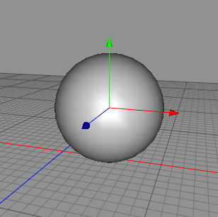
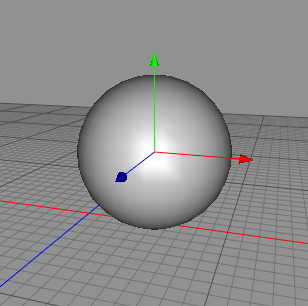

移動変形をフリーズ ツール
移動変形をフリーズ ツールの目的は、移動変形を同位置に保ったまま、移動変形されたオブジェクトを原点中心にリセットする事です。これはオブジェクトをグループ化し１つの座標系で動かす必要がある場合に役立つでしょう。
"せん断問題":
Cheetah3D は階層的な移動変形システムを持っています。これは、すべてのオブジェクトがそれら独自の座標系を持つという事を意味しています。このオブジェクトの座標系は、親オブジェクトの座標系に影響を受けているそれぞれの 位置、回転、スケール のプロパティを通して決定されます。ここで、より理解するために次のようにしてみましょう。
-
- フォルダオブジェクトと立方体オブジェクトを作成します。
- フォルダオブジェクトに立方体オブジェクトをドラッグ＆ドロップします。
- フォルダオブジェクトのスケール Y を 0.5 に設定します。
- ここで立方体オブジェクトを回転させると、立方体オブジェクトはせん断されます。
- ここでシフトキーを押さずに、フォルダオブジェクトの外に立方体オブジェクトをドラッグ＆ドロップすると、立方体オブジェクトのグローバルな位置と形状は変化しません。したがって、形状はまだせん断された状態です。立方体オブジェクトの各面をもう一度まっすぐに直交させる（または、形状を保ったままには、"スケール" をリセットするには、）移動変形をフリーズ ツールの "せん断/拡大縮小をフリーズ" か "せん断をリセット" コマンドを使用できます。
編集モード
このツールはオブジェクトモードのローポリゴンオブジェクト・スプラインオブジェクトに対して働きます。


移動変形をフリーズツールを使用するには、メニューから "ツール 移動変形をフリーズ" を選択します。移動変形をフリーズツールがツールプロパティに表示されます。それぞれ異なる動作を実行するには、それらのボタンをクリックします（下の解説を参照してください）。移動変形をフリーズは、つねに現在選択中のオブジェクトに対して実行されます。
移動変形をフリーズ" を選択します。移動変形をフリーズツールがツールプロパティに表示されます。それぞれ異なる動作を実行するには、それらのボタンをクリックします（下の解説を参照してください）。移動変形をフリーズは、つねに現在選択中のオブジェクトに対して実行されます。
補助キー
-
- なし
プロパティ
- 移動変形をフリーズ: ポリゴンデータやスプラインデータに対してオブジェクト全体の移動変形の焼き付けを行います。このコマンドは、編集可能な（パラメトリックではない）スプラインやポリゴンオブジェクトでのみ使用できます。実行後、移動変形プロパティはリセットされます。

移動変形をフリーズコマンドの使用によって、移動された立方体の座標原点は (0,0,0) 位置に戻されていますが、その移動位置でとどまっています（右）。
- せん断/拡大縮小をフリーズ: ポリゴンデータやスプラインデータに対してオブジェクトのせん断とスケール値の焼き付けを行います。実行後、せん断値は (0,0,0) に、スケール値は (1,1,1) に設定されます。このコマンドは、編集可能な（パラメトリックではない）スプラインやポリゴンオブジェクトでのみ使用できます。

左のオブジェクトは "せん断問題" の影響を受けています。ここで、内部のせん断プロパティを、せん断値とスケール値に焼き付けると、オブジェクトの形状は変わりませんが、その座標系だけが変更されます。
- せん断をリセット: オブジェクト内部のせん断変形プロパティをリセットします。

左のオブジェクトは "せん断問題" の影響を受けています。ここで、その内部のせん断プロパティをリセットすると、オブジェクトの形状は変化しますが、座標系は直交します。
- ピボットを中心に移動: オブジェクトのピボットポイント（回転の中心）をオブジェクトの形状の中心に移動します。
 

左のオブジェクトはピボットポイントは形状の外にありますが、特にアニメーションのためには、ピボットポイントが
オブジェクトの中心にあれば良い場合があります。"ピボットを中心に移動" コマンドを使用して、形状の中心にピボットポイントを移動します。
- ピボットをリセット: オブジェクトのグローバルな位置を維持したまま、ピボットポイントを (0, 0, 0) にセットします。
- ピボットのフリーズ: 形状にピボットポイントを固定します。このツールはスプラインとポリゴンオブジェクトでのみで動作します。ピボットポイントを焼き付けた後では、ピボットポイントは (0, 0, 0) に戻ります。